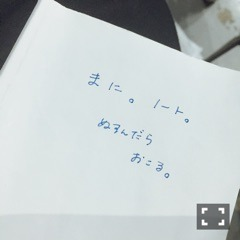

| 2016/08 24 Wed | 斎藤ちはる 夕日の赤と空の青。(´>∀<｀)ゝ |
ちはるーむへようこそ！
浴衣姿を見ると夏！って感じがする。
最近台風が凄かったり
雨がちょくちょく降ったりしてるから
夏！真夏！灼熱地獄！
みたいな感じではないね〜(> <)
私は代謝が人よりも良すぎるから
暑くないのは寧ろ嬉しいんだけど！笑
夏をあまり感じられてないからか
夏が終わる感じがあまりしない(_ _).｡o○
いいんだか悪いんだか〜( ˙³˙)
私が季節の変わり目を感じるのは
外で蝉ではなくて
鈴虫が鳴いた時。
秋だな〜って感じるんだよね！
あと、夏服よりも秋服が着たくなったら
夏が終わるって感じがする。( ◦˙ ˙◦ )
皆さんはどう？？(_ _).｡o○
-------------------------♡
サイリウムカラーの赤と青。
街中でも、赤と青を見つけると
どうしても反応してしまうのは、
私だけ？？(｡･o･｡)ﾉ
このイヤリングも赤と青！！
可愛い。
赤と青ってパキッとしてるし
ハッキリしてるし
(←顔みたいにって書こうと思ったけどやめた。結局書いたけど。)
アメリカンだし
(←優里に言われたの。)
混ぜると紫だし
(←実はカラー決めた時は紫には気付かなかった。。)
とても好きな色！！
私服でも、赤い服を見つけると
あ、いいな♡と思う。
青い靴を見つけると
カッコいいな！と思う。
夕日の赤も大好きだし
海の青も空の青も大好き。
ここで突然の
#chihashot
赤と青がテーマな写真。
これは去年の年始に撮ったもの！
今でもお気に入り。
-------------------------♡
♬ ChihaMusic
「人との距離のはかりかた」plentyさん
曲を聴いてると歌詞がすぅっと
頭の中に入ってくる。
聞きやすいし覚えやすい。
歌詞が真っ直ぐだからだっていうのも
あると思うけど胸にしみる。
声も好き！
優しくて儚い。素敵。
今日、ふと隣を見たらこれが置いてあった。

真洋のノート。
誰かに盗まれると思ったのかな。。笑
誰も盗まないよヽ(；；)丿笑
(ある意味)平和な毎日です。
おやすみ〜！
斎藤ちはる